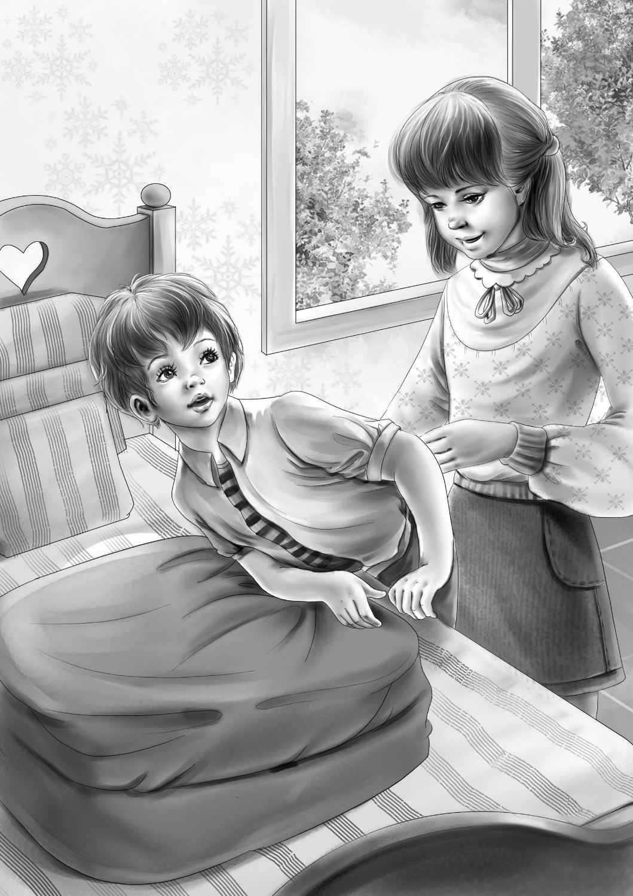

"What day is this?"said Jessie."Friday. Couldn't we go tomorrow and see the place,Grandfather?"
"That is just what I was thinking," said Mr. Alden."We could stay all day Sunday and get back for the last week of school. Of course Henry is home for the summer already."
Violet said,"I think you are the very kindest man in the world!" She took his hand in both of hers."You spend all your time trying to make us happy."
"Well,well. Thank you,my dear. But you children spend all your time making me happy,too."
"Oh,let's talk about the farm,Grandfather," said Benny."Do they have animals?"
"What do you think,Benny?" asked Jessie."Nobody lives there. I don't think Aunt Jane wants any animals. She just wants to come East."
Henry nodded at his sister."I think Aunt Jane wants to be near you,Grandfather. I think she feels safer."
"Maybe you are right,Henry," said Mr. Alden. He laughed again."Maggie is coming with Jane. Remember Maggie who has stayed with her for so long? Then Sam and his wife will come and stay this summer anyway. And I am sure Jane will bring her dog Lady."
"That's good,"said Jessie."Maggie knows what Aunt Jane needs. They will all take care of Aunt Jane. She ought to have a man in the house."
"Yes,and Sam is a very good man," said Mr. Alden."I don't think Jane will run the farm. But she wants to live there. I'd like to start early tomorrow morning. Do you think you could be ready,Benny?"
"Me?"cried Benny. He went over to his grandfather and put his hand on his knee."I'll get up any time you say. Three o'clock in the morning. Or two,or four,or even midnight! Any old time."
"How about five?" said Mr. Alden looking at Benny.
"Fine," said Benny. "Don't we have to take a bag if we stay overnight?"
"Yes,each of you must take a bag. We won't stay at the farmhouse. But we can find a motel,maybe."
"A motel!" said Benny."That's neat."
"Let's go and pack,Jessie," said Violet."I can hardly wait to see Aunt Jane."
"Aunt Jane won't be there," said Mr. Alden.
"No,I know that," said Violet."But I'd like to hurry and get ready for her."
"We all seem to be in a great hurry," said Benny."Will Aunt Jane fly?"
"Yes,I think John Carter can go out for her. Then she will not worry about a thing."
"Oh,you mean our nice Mr. Carter!" cried Jessie."He can do anything. Aunt Jane will be safe with him."
Jessie was right. John Carter was trusted with many things by Grandfather. He even flew Mr. Alden's private plane.
"Now I think I'll go and pack my own bag," said Grandfather,getting out of his chair. "Good-night,everybody."
"Good-night?" shouted Benny."It's only half past seven. Are we going to bed?"
Everybody laughed at Benny's surprised look.
"I am," said Grandfather,"and you'd better. Just pack your things first. Remember we start at five. And that means breakfast before five."
"Can we take Watch?" asked Benny.
"Yes,take Watch. It won't be a long trip."
The Aldens had the same suitcases they had taken to Blue Bay. They all knew how to pack very well. It did not take long to decide to take plain clothes. They knew they would need them on a farm.
"We won't dress up at all," said Jessie."Just take shorts and slacks and flat shoes."

"We always take flat shoes,"said Henry."Everywhere we go we take flat shoes."
"Oh,Henry,don't tease," laughed Jessie."I know boys do."
When four o'clock in the morning came,Benny was fast asleep. He did not hear the alarm clock. Violet went into his room and shook him gently.
"No," said Benny. "No!It isn't morning yet. It's too dark."
"You said you'd get up at midnight or four o'clock. Any old time," said Violet.
"It's different now," said Benny.
Violet laughed. She put on all the lights and Benny got out of bed.
The family ate a big breakfast of bacon and eggs,cereal and toast and orange juice. Then they all piled into the big station wagon. Henry drove. It was a beautiful spring day. The woods were just beginning to look green. The fields were covered with dandelions. Birds sang in the trees as the sun came up. The family went along the smooth turnpike on the way north.
"We should get there by nine o'clock," said Grandfather."I'll tell you where to turn,Henry."
A little later he shouted,"Here we are,Henry! Turn here!See the white church over there? And that other building is the town hall. And there is the old store! How small it looks! It used to look big."
They were delighted to find the store so easily. Everyone got out of the car and went into the store.
"My gracious me!" said the man behind the counter."I bet you're James Alden. I'm Elisha Morse."
"I remember your name,Elisha,"said Grandfather. He shook hands.
For several minutes the two men talked about the sale of the farm. Then Mr. Alden wrote out a check and gave it to Mr. Morse.
"I don't think you're going to like your farm," Mr. Morse said as he put the check away."The roof leaks."
"Can't it be fixed?" asked Mr. Alden.
"Sure. Only it will cost money. I'd do it for you if I had the money."
"Would you fix it yourself?"
"No. My son is the handy one. He could put on new shingles."
"You get him if you can," said Grandfather."we'll go right up to the house. Ask your son to come up and see me. We must certainly have the roof fixed."
"Good," said Mr. Morse."Here's the key to the back door. My son will come in soon to see who was in the store."
Mr. Morse came out and watched the Aldens get back into the station wagon. He said nothing. The car began to move. Still Mr. Morse said nothing. But when the car had rolled down the drive,he called,"There's a lot of other things the matter with that farm!You won't like it!"
But the Aldens were on their way to the farm on the hill and Henry did not turn back.